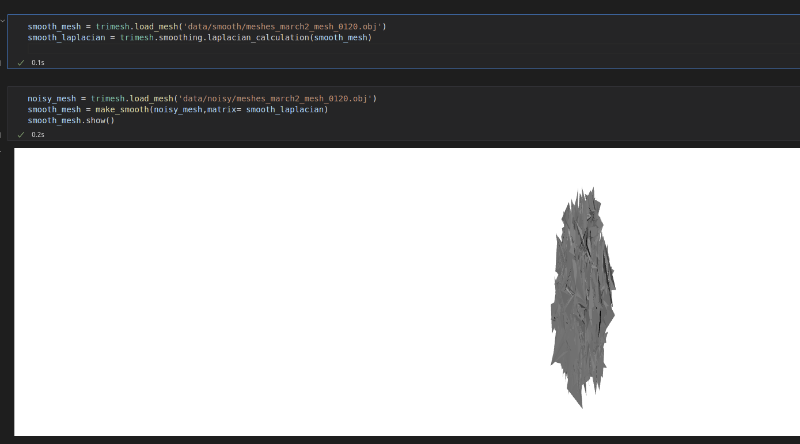

| 1. At training time, only look at clean data |
|---|
|
input: clean PC, target Laplacian weight of clean PC output: Laplacian weight for noisy PC |
| 2. At training time, look at clean + noisy data |
|
input: noisy PC, target Laplacian weight of clean PC output: Laplacian weight for noisy PC  |